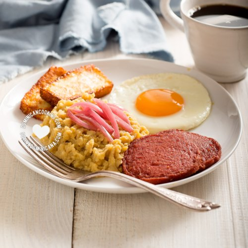

El MANGÚ es uno de los platos más queridos de los dominicanos, base de
" Los Tres
Golpes", el desayuno más
completo y complejo de nuestra gastronomía. La razón por la cual escogí el mangú es por que me
encanta y
en
un desayuno estaría satisfecha si como MANGÚ.

Ingredientes
4 plátanos verdes
1 ½ cucharadita de sal
4 cucharadas de mantequilla o aceite de oliva
½ taza de agua a temperatura ambiente
Intrucciones
Pelar plátanos: Pela los plátanos (ver como). Corta en octavos (dos mitades, luego las mitades
en
cuartos). Remueve la parte central del plátano donde están las semillas (opcional)
Hervir plátanos: Hierve los plátanos en agua, a la que has agregado la sal, hasta que estén muy
blandos. Retira del fuego.
Majar plátanos: Maja los plátanos recién sacados del agua con un tenedor (cuidado de no
quemarte).
Agrega mantequilla (o aceite de oliva) y mezcla bien. Agrega el agua fría y mezcla hasta que
tengas
un puré bien suave.
Esta receta fue copiada de la página https://www.cocinadominicana.com/292/mangu?jwsource=cl